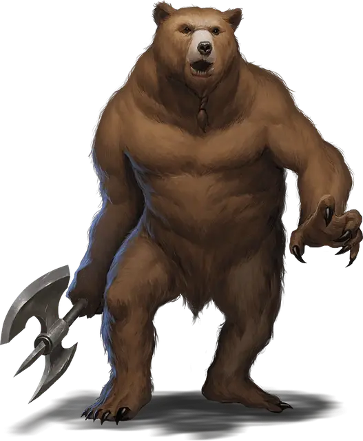

Вермедведь
Werebear
Средний Гуманоид (Человек, Перевёртыш), нейтрально-добрый

Класс Доспеха 10 (10 в облике гуманоида, 11 природный доспех в облике медведя и гибридном облике)
Хиты 135 (18к8 + 54)
Скорость 30 футов (40 футов в облике медведя и гибридном облике), лазая 30 футов (в облике медведя и гибридном облике)
| мод | спас | ||
|---|---|---|---|
| СИЛ | 19 | +4 | +4 |
| ЛОВ | 10 | +0 | +0 |
| ТЕЛ | 17 | +3 | +3 |
| мод | спас | ||
|---|---|---|---|
| ИНТ | 11 | +0 | +0 |
| МДР | 12 | +1 | +1 |
| ХАР | 12 | +1 | +1 |
Навыки Восприятие +7
Иммунитет к урону дробящий, колющий, рубящий от немагических атак, кроме нанесённых посеребрённым оружием
Чувства пассивное Восприятие 17
Языки Общий
Опасность 5 (1800 опыта)
Бонус мастерства +3
Среда обитания Арктика, Лес, Холмы
Особенности
Языки. Общий (не может говорить в облике медведя)
Перевёртыш. Вермедведь может действием превратиться в гибрид медведя и гуманоида Большого размера или медведя Большого размера, или же принять свой истинный облик гуманоида. Вся его статистика, за исключением КД, остаётся одинаковой во всех обликах. Всё несомое и носимое им снаряжение не превращается. Он принимает свой истинный облик, если умирает.
Тонкий нюх. Вермедведь совершает с преимуществом проверки Мудрости (Восприятие), полагающиеся на обоняние.
Действия
Мультиатака. В облике медведя вермедведь совершает две атаки когтями. В облике гуманоида он совершает две атаки секирой. В облике гибрида он может атаковать либо как медведь, либо как гуманоид.
Укус (только в облике медведя или гибрида). Рукопашная атака оружием: +7 к попаданию, досягаемость 5 футов, одна цель. Попадание: Колющий урон 15 (2к10 + 4). Если цель — гуманоид, она должна преуспеть в спасброске Телосложения Сл 14, иначе станет проклятой ликантропией вермедведя.
Коготь (только в облике медведя или гибрида). Рукопашная атака оружием: +7 к попаданию, досягаемость 5 футов, одна цель. Попадание: Рубящий урон 13 (2к8 + 4).
Секира (только в облике гуманоида или гибрида). Рукопашная атака оружием: +7 к попаданию, досягаемость 5 футов, одна цель. Попадание: Рубящий урон 10 (1к12 + 4).
Описание
Вермедведи — могучие ликантропы, наделенные способностью смирять свою звериную натуру и отвергать свои яростные порывы. В облике гуманоида они предстают большими, мускулистыми существами, покрытыми большим количеством волос, цвет которых совпадает с цветом меха их медвежьей формы. Эти оборотни — одиночки по натуре, опасающиеся того, что может произойти с невинными существами рядом, когда их звериная природа возьмет верх.
Когда вермедведь превращается, он вырастает до неимоверных размеров, размахивая оружием или когтями. Он сражается с яростью медведя, но даже в своем зверином облике он старается никого не кусать, чтобы не передать свое проклятье. Обычно вермедведи передают свою ликантропию только избранным соратникам и ученикам, уделяя достаточное количество времени после этого тому, чтобы новообращенный ликантроп мог принять свое проклятье и научился его контролировать.
Одиночки по натуре, вермедведи выступают хранителями своих территорий, оберегающими флору и фауну как от гуманоидов, так и от вторжения чудовищ. И хотя большинство вермедведей придерживается доброго мировоззрения, некоторые из них столь же злы, как и прочие ликантропы.
См. дополнительно статью: «Бестиарий: Ликантропы»